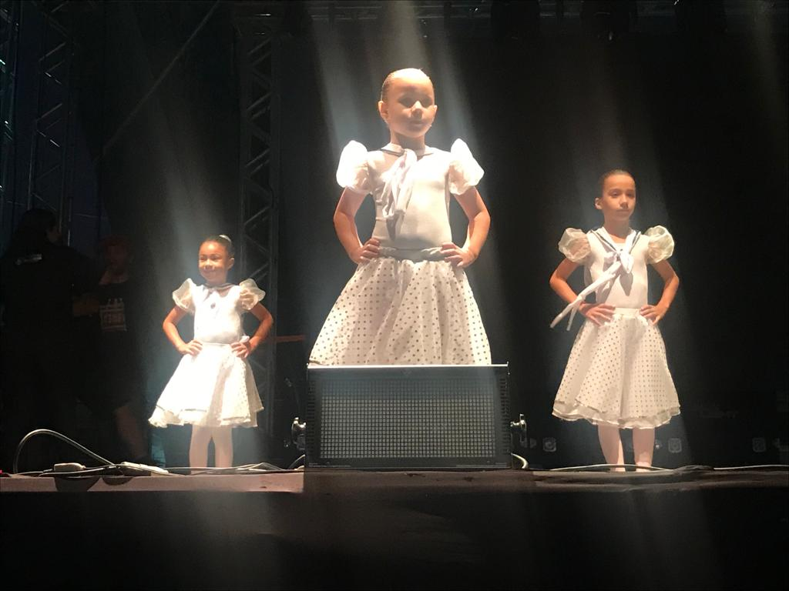

Fotos
Matrícula
As matrículas só poderão ser realizadas pelo responsável legal do aluno, pessoa com guarda provisória ou matrícula encaminhada pelo Conselho Tutelar de posse dos documentos necessários, segundo o regimento Escolar Básico da Rede Municipal de Ensino de Saquarema.
Objetivos
Incentivar as diferentes linguagens (corporal, musical, plástica, oral e escrita) ajustadas as diferentes intenções e situações de comunicação, compreender e ser compreendido, expressar suas idéias, sentimentos, desejos de avançar no seu processo de construção de significados, enriquecendo sua capacidade expressiva.
Sobre
Conheça mais a nossa escola
A Escola Municipal Carlos Vanderson Gonçalves Pereira, atende Crianças de Educação infantil, em dois períodos: manhã e tarde. Assim, compreende os alunos de 2 anos, 3 anos 4 anos e 5 anos de idade e completar até 31 de março. Oferece os recursos necessários para o conforto e desenvolvimento educacional dos seus alunos: Internet, Parque Infantil, Sala de Orientação Pedagógica, Refeitório, Sala de Ballet, Quadra Esportiva Coberta, Pátio Descoberto, Área Verde, Sala do Professor, Alimentação, e Recursos Pedagógicos.
Contato
Telefone
(022) 2652-1945
em.carllos@gmail.com
Entre em contato para matriculas, eventos educativos e informações
Escola Municipal Carlos Vanderson Gonçalves Pereira, localizada a Rua 17 com 96 s/nº, Jaconé – Saquarema - RJ, CEP 28998000